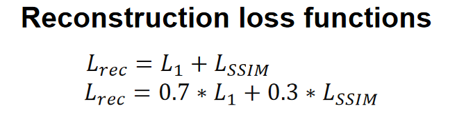
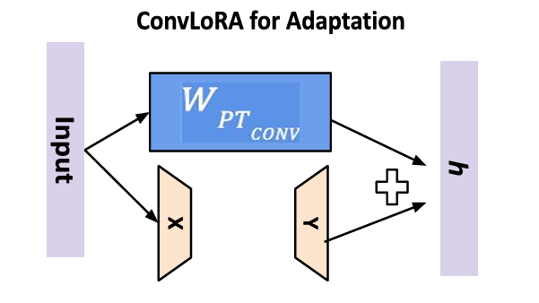

Dataset
-
Pretrained models
We used the open-source model taichi.pt provided by Latent Image Animator as the pretrained model.
-
Dataset
We used the UBC Fashion dataset proposed in DwNet for finetuning, which includes 500 training videos and 100 testing videos.
Experiments
Due to the lengthy pretraining , we finetuned the open-source model and achieved good results.
Based on this, we conducted three attempts at the finetuning process.
Finetune with different loss
In the original work, the reconstruction loss used L1 loss. In the fine-tuning experiments, we utilized pre-trained taichi model and added the SSIM loss to the reconstruction loss, specifically, we designed two reconstruction loss functions. The two reconstruction loss functions are shown in the figure below.
Finetune with adapter
In the fine-tuning task, the optimization of a specific task can be carried out by introducing an adapter module. The adapter module is a lightweight set of parameters that are added to the middle layer of the model to protect the parameters of the original pre-trained model. The goal of this approach is to adapt the parameters of the adapter module to the new task without changing the overall model structure.In the experiment, we introduced the adapter into the model by way of residuals.

Finetune with LoRA
Low Rank Adaptation (LoRA) is used to address the challenges faced in finetuning large language models. For large models with billions of parameters, finetuning for specific domains is costly. LoRA retains the weights of pretrained models and adds trainable layers within each model block. This leads to a significant reduction in the number of parameters that need to be finetuned. Generally speaking, LoRA is used in transformer architectures. However, LIA is composed of convolutional neural networks, so we use ConvLoRA from the article CnvLoRA and AdaBN Based Domain Adaptation via Self Training for finetuning.
Results
Here are the results of the above three attempts.
Finetune with different loss
| Model | Recon loss | Lpips loss |
|---|---|---|
| taichi_40000 | 0.017870907 | 0.047854178 |
| taichi_80000 | 0.017218325 | 0.04689284 |
| taichi_120000 | 0.017635012 | 0.04753318 |
Finetune with adapter
| Model | Recon loss | Lpips loss |
|---|---|---|
| Adapter_40000 | 0.021015551 | 0.061745953 |
| Adapter_80000 | 0.021210136 | 0.06158965 |
| Adapter_12000 | 0.025388759 | 0.0610452 |
Due to the extremely short time required to update the parameters of the discriminator, we provide the result that the discriminator does not use adapter.
Finetune with LoRA
| Model | Recon loss | Lpips loss |
|---|---|---|
| Lora_40000 | 0.019903766 | 0.058042873 |
| Lora_80000 | 0.019482996 | 0.05589702 |
| Lora_120000 | 0.01968369 | 0.05461842 |
| Lora_w/o_Dis_40000 | 0.020124692 | 0.0595114 |
| Lora_w/o_Dis_80000 | 0.019737989 | 0.05686592 |
| Lora_w/o_Dis_120000 | 0.019538457 | 0.05562961 |
Due to the extremely short time required to update the parameters of the discriminator, we provide the result that the discriminator does not use ConvLoRA.